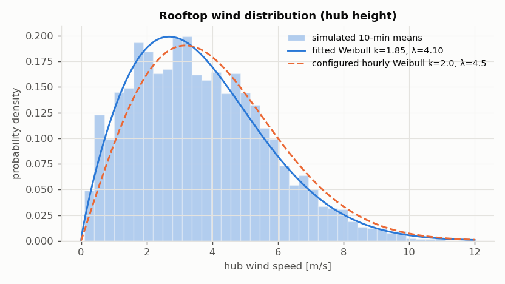
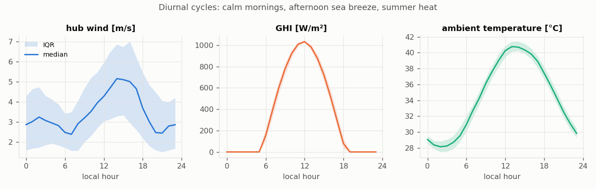
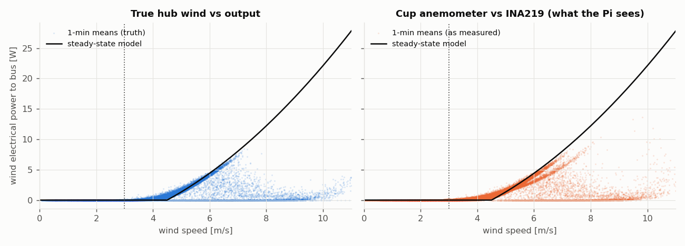
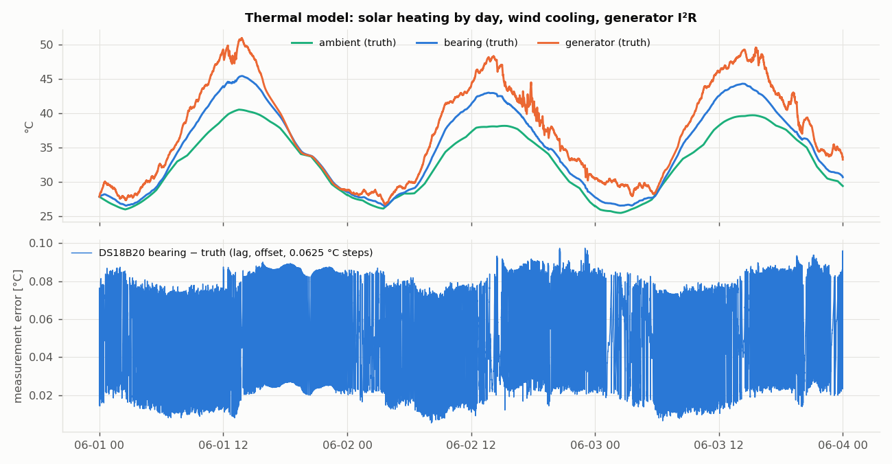
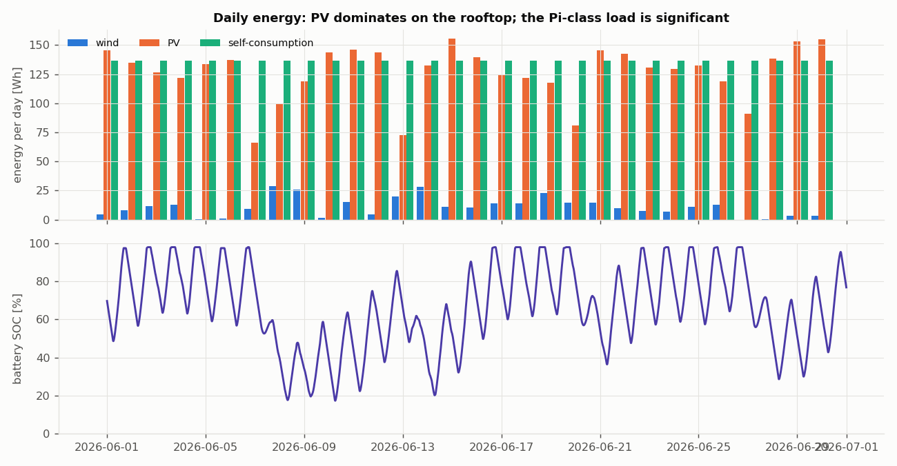

AeroSolar Twin: simulator realism check
Everything below is simulated. The purpose is to show that the synthetic data has the statistical and physical character of a real rooftop VAWT, so models trained on it transfer to the prototype after recalibration (see CALIBRATION.md).
Wind distribution
10-minute hub-height means over the run, mean 3.64 m/s, 58 % of the time above 3 m/s. The fitted Weibull differs from the configured hourly one because diurnal and shamal multipliers reshape it; turbulence widens the tail.

Diurnal cycles
Median and interquartile range by local hour. Afternoon sea breeze peaks around 15:00; mornings are calm; irradiance follows solar geometry for 25.1° N with dust/cloud dips.

Power curve
Left: truth. Right: what the Pi sees (cup anemometer overspeeding and 0.67 m/s quantisation smear the curve). The electrical cut-in (~4.5–5 m/s) is far above the rotational cut-in because the PMG only charges once its rectified EMF exceeds the battery voltage. Output stops above ~8 m/s because the 200 rpm overspeed trip engages (braked 11.76 % of this run).

Temperatures
Bearing and generator temperatures ride on ambient plus solar heating of the mast, cooled by wind. The lower panel shows DS18B20 error: probe lag, per-device offset and 0.0625 °C steps (85/−127 glitch codes are removed here and counted in the table).

Energy balance
Daily energy from the truth record. Rooftop wind contributes little at a 4.5 m/s Weibull scale; the 12 V self-consumption (Pi 5 + ESP32 + Arduino + sensors) is comparable to the PV yield.

Sensor and network quirks
| Packets lost (Wi-Fi, burst model) | 0.79 % | Gilbert-Elliott: losses arrive in bursts |
| Duplicate packets (QoS 1) | 2580 | same seq delivered twice |
| Out-of-order arrivals | 6565 | late packets overtaken by newer ones |
| DS18B20 85.0 °C power-on reads | 163 | across 3 probes |
| DS18B20 −127 °C disconnect reads | 751 | incl. whole-bus dropouts |
| BH1750 saturated (all / daytime) | 29.2 % / 53.3 % | 65535 lx ≈ 546 W/m² at /120 |
| Anemometer bias vs hub truth (all / v>3) | +0.02 / +0.02 m/s | overspeeding + quantisation + stall |
| Hall rpm |error| (count method) | 12.6 rpm | ±60 rpm steps at 1 pulse/rev, 1 s gate |
| DHT22 repeated values | 64 % | 2 s min interval + failed reads |
Daily energy [Wh] (first 7 days)
| 2026-06-01 | wind 4.4 PV 145.8 load 136.4 | |
| 2026-06-02 | wind 8.2 PV 135.0 load 136.4 | |
| 2026-06-03 | wind 11.6 PV 126.3 load 136.4 | |
| 2026-06-04 | wind 12.7 PV 121.7 load 136.4 | |
| 2026-06-05 | wind 0.1 PV 133.4 load 136.4 | |
| 2026-06-06 | wind 0.9 PV 137.2 load 136.4 | |
| 2026-06-07 | wind 8.9 PV 66.3 load 136.4 |